폐기물처리기사 (2020-08-22 기출문제)
1과목: 폐기물 개론
1. 슬러지를 처리하기 위하여 생슬러지를 분석한 결과 수분은 90%, 총고형물 중 휘발성 고형물은 70%, 휘발성 고형물의 비중은 1.1, 무기성 고형물의 비중은 2.2일 때 생슬러지의 비중은? (단, 무기성 고형물 + 휘발성 고형물 = 총고형물)
- 1.023
- 1.032
- 1.041
- 1.⑤3
(정답률: 67%)

2. 폐기물처리장치 중 쓰레기를 물과 섞어 잘게 부순 뒤 다시 물과 분리시키는 습식처리장치는?
- Baler
- Compactor
- Pulverizer
- Shredder
(정답률: 78%)
3. 폐기물 파쇄기에 대한 설명으로 틀린 것은?
- 회전드럼식 파쇄기는 폐기물의 강도차를 이용하는 파쇄장치이며 파쇄와 분별을 동시에 수행할 수 있다.
- 일반적으로 전단파쇄기는 충격파쇄기보다 파쇄속도가 느리다.
- 압축파쇄기는 기계의 압착력을 이용하여 파쇄하는 장치로 파쇄기의 마모가 적고 비용도 적다.
- 해머밀 파쇄기는 고정칼, 왕복 또는 회전칼과의 교합에 의하여 폐기물을 전단하는 파쇄기이다.
(정답률: 79%)
4. 폐기물의 관거(Pipeline)을 이용한 수송 방법 중 공기를 이용한 방법이 아닌 것은?
- 진공수송
- 가압수송
- 슬러리수송
- 캡슐수송
(정답률: 77%)
5. 고정압축기의 작동에 대한 용어로 가장 거리가 먼 것은?
- 적하(Loading)
- 카셋용기(Cassettes Containing bag)
- 충전(Fill Charging)
- 램압축(Ram Compacts)
(정답률: 74%)
6. 쓰레기를 압축시킨 후 용적이 45% 감소되었다면 압축비는?
- 1.4
- 1.6
- 1.8
- 2.0
(정답률: 78%)
7. 4%의 고형물을 함유하는 슬러지 300m3를 탈수 시켜 70%의 함수율을 갖는 케이크를 얻었다면 탈수된 케이크의 양(m3)은? (단, 슬러지의 밀도 = 1ton/m3)
- 50
- 40
- 30
- 20
(정답률: 77%)
8. 폐기물의 발생량 예측방법이 아닌 것은?
- Load-count analysis method
- Trend method
- Multiple regression model
- Dynamic simulation model
(정답률: 81%)
9. 쓰레기 발생량 예측방법 중 모든 인자를 시간에 대한 함수로 나타낸 후, 시간에 대한 함수로 표현된 각 영향 인자들 간의 상관관계를 수식화하는 방법은?
- 경향법
- 다중회귀모델
- 회귀직선모델
- 동적모사모델
(정답률: 68%)
10. 쓰레기의 관리체계가 순서대로 올바르게 나열한 것은?
- 발생 - 적환 - 수집 - 처리 및 회수 - 처분
- 발생 - 적환 - 수집 - 처리 및 회수 - 수송 - 처분
- 발생 - 수집 - 적환 - 수송 – 처리 및 회수 - 처분
- 발생 - 수집 - 적환 - 처리 및 회수 - 수송 - 처분
(정답률: 81%)
11. 폐기물의 성상 분석의 절차로 알맞은 것은?
- 시료 → 물리적 조성 파악 → 밀도 측정 → 분류 → 원소분석
- 시료 → 밀도 측정 → 물리적 조성 파악 → 전처리 → 원소분석
- 시료 → 전처리 → 밀도 측정 → 물리적 조성파악 → 원소분석
- 시료 → 분류 → 전처리 → 물리적 조성 파악 → 원소분석
(정답률: 80%)
12. 함수량이 30%인 쓰레기를 건조기준으로 원소성분 및 열량계로 열량을 측정한 결과가 다음과 같을 때 저위발열량(kcal/kg)은? (단, 발열량 = 3,300kcal/kg, C 65%, H 20%, S 5%)
- 1,030
- 1,040
- 1,⑤0
- 1,060
(정답률: 45%)
13. 환경경영체제(ISO–14000)에 대한 설명으로 가장 거리가 먼 내용은?
- 기업이 환경문제의 개선을 위해 자발적으로 도입하는 제도이다.
- 환경사업을 기업 영업의 최우선 과제 중의 하나로 삼는 경영체제이다.
- 기업의 친환경성 이미지에 대한 광고 효과를 위해 도입할 수 있다.
- 전과정평가(LCA)를 이용하여 기업의 환경성과를 측정하기도 한다.
(정답률: 75%)
14. 투입량이 1ton/hr이고 회수량이 600kg/hr(그 중 회수대상물질은 500kg/hr)이며, 제거량은 400kg/hr(그 중 회수대상물질은 100kg/hr)일 때 선별효율(%)은? (단, Worrell식 적용)
- 약 63
- 약 69
- 약 74
- 약 78
(정답률: 60%)
15. LCA의 구성요소로 가장 거리가 먼 것은?
- 자료 평가
- 개선 평가
- 목록 분석
- 목적 및 범위의 설정
(정답률: 74%)
16. 폐기물의 파쇄 목적이 잘못 기술된 것은?
- 입자 크기의 균일화
- 밀도의 증가
- 유가물의 분리
- 비표면적의 감소
(정답률: 81%)
17. 쓰레기 수거효율이 가장 좋은 방식은?
- 타종식 수거 방식
- 문전 수거(플라스틱 자루) 방식
- 문전 수거(재사용 가능한 쓰레기통) 방식
- 대형 쓰레기통 이용 수거 방식
(정답률: 79%)
18. 스크린상에서 비중이 다른 입자의 층을 통과하는 액류를 상하로 맥동시켜서 층의 팽창수축을 반복하여 무거운 입자는 하층으로 가벼운 입자는 상층으로 이동시켜 분리하는 중력분리 방법은?
- Secators
- Jigs
- Melt separation
- Air stoners
(정답률: 76%)
19. 도시에서 폐기물 발생량이 185,000톤/년, 수거 인부는 1일 550명, 인구는 250,000명이라고 할 때 1인 1일 폐기물 발생량(kg/인·day)은? (단, 1년 365일 기준)
- 2.03
- 2.35
- 2.45
- 2.77
(정답률: 74%)
20. 폐기물 수집 운반을 위한 노선 설정 시 유의할 사항으로 가장 거리가 먼 것은?
- 될 수 있는 한 반복 운행을 피한다.
- 가능한 한 언덕길은 올라가면서 수거한다.
- U자형 회전을 피해 수거한다.
- 가능한 한 시계방향으로 수거노선을 정한다.
(정답률: 86%)
2과목: 폐기물 처리 기술
21. 매립지 입지선정절차 중 후보지 평가단계에서 수행해야 할 일로 가장 거리가 먼 것은?
- 경제성 분석
- 후보지 등급 결정
- 현장 조사(보링 조사 포함)
- 입지선정기준에 의한 후보지 평가
(정답률: 61%)
22. 저항성 탐사에서의 토양의 저항성(R)을 나타내는 깃은? (단, I는 전류, s는 전극 간격, V는 측정 전압을 의미한다.)
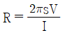
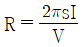
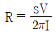
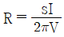
(정답률: 59%)
23. 친산소성 퇴비화 과정의 온도와 유기물의 분해속도에 대한 일반적인 상관관계로 옳은 것은?
- 40℃ 이하에서 가장 분해속도가 빠르다.
- 40 ~ 55℃ 정도에서 가장 분해속도가 빠르다.
- 55 ~ 60℃ 정도에서 가장 분해속도가 빠르다.
- 60℃ 이상에서 가장 분해속도가 빠르다.
(정답률: 71%)
24. 침출수의 혐기성 처리에 대한 설명으로 옳지 않은 것은?
- 고농도의 침출수를 희석 없이 처리할 수 있다.
- 미생물의 낮은 증식으로 슬러지 발생량이 적다.
- 온도, 중금속 등의 영향이 호기성 공정에 비해 크다.
- 호기성 공정에 비해 높은 영양물질 요구량을 가진다.
(정답률: 58%)
25. 스크린 선별에 대한 설명으로 옳은 것은?
- 트롬멜 스크린의 경사도는 2 ~ 3°가 적정하다.
- 파쇄 후에 설치되는 스크린은 파쇄설비 보호가 목적이다.
- 트롬 멜스크린의 회전속도가 증가할수록 선별효율이 증가한다.
- 회전 스크린은 주로 골재분리에 흔히 이용되며 구멍이 막히는 문제가 자주 발생한다.
(정답률: 64%)
26. 용적이 1,000m3인 슬러지 혐기성 소화조에서 함수율 95%의 슬러지를 하루에 20m3를 소화시킨다면 이 소화조의 유기물 부하율(kgvs/m3·day)은? (단, 슬러지 고형물 중 무기물 비율은 40%이고, 슬러지의 비중은 1.0으로 가정한다.)
- 0.2
- 0.4
- 0.6
- 0.8
(정답률: 60%)
27. 유기성 폐기물의 C/N비는 미생물의 분해 대상인 기질의 특성으로 효과적인 퇴비화를 위해 가장 직접적인 중요 인자이다. 일반적으로 초기 C/N비로 가장 적합한 것은?
- 5 ~ 15
- 25 ~ 35
- 55 ~ 65
- 85 ~ 100
(정답률: 71%)
28. 3,785m3/일 규모의 하수처리장에 유입되는 BOD와 SS농도가 각각 200mg/L이다. 1차 침전에 의하여 SS는 60%가 제거되고, 이에 따라 BOD도 30% 제거된다. 후속처리인 활성슬러지 공법(폭기조)에 의해 남은 BOD의 90%가 제거되며 제거된 kgBOD 당 0.2kg의 슬러지가 생산된다면 1차 침전에서 발생한 슬러지와 활성슬러지공법에 의해 발생된 슬러지량의 총합(kg/일)은? (단, 비중은 1.0 기준, 기타 조건은 고려 안함)
- 약 530
- 약 550
- 약 570
- 약 590
(정답률: 51%)
29. 매립지 차수막으로서의 점토 조건으로 적합하지 않은 것은?
- 액성한계 : 60% 이상
- 투수계수 : 10-7cm/sec 미만
- 소성지수 : 10% 이상 30% 미만
- 자갈 함유량 : 10% 미만
(정답률: 60%)
30. 고형화 처리 중 시멘트 기초법에서 가장 흔히 사용되는 포틀랜드 시멘트 화합물 조성 중 가장 많은 부분을 차지하고 있는 것은?
- 2SiO2·Fe2O3
- 3CaO·SIO2
- 2CaO·MgO
- 3CaO·Fe2O3
(정답률: 69%)
31. 분뇨를 호기성 소화 방식으로 일 500m3 부피를 처리하고자 한다. 1차 처리에 필요한 산기관수는? (단, 분뇨 BOD 20,000mg/L, 1차 처리효율 60%, 소요 공기량 50m3/BODkg, 산기관 통풍량 0.5m3/min·개)
- 347
- 417
- 694
- 1,157
(정답률: 48%)
32. 컬럼의 유입구와 유출구 사이에 수리학적 수두의 차이가 없을 때 오염물질은 무엇에 따라 다공성 매체를 이동하는가?
- 농도 경사
- 이류 이동
- 기계적 분산
- Darcy 플럭스
(정답률: 71%)
33. 6가크롬을 함유한 유해폐기물의 처리방법으로 가장 적절한 것은?
- 양이온교환수지법
- 황산제1철 환원법
- 화학추출분해법
- 전기분해법
(정답률: 63%)
34. 유기염소계 화학물질을 화학적 탈염소화 분해할 경우 적합한 기술이 아닌 것은?
- 화학 추출 분해법
- 알칼리 촉매 분해법
- 초임계 수산화 분해법
- 분별 증류 촉매 수소화 탈염소법
(정답률: 55%)
35. 매립지 기체 발생단계를 4단계로 나눌 때 매립초기의 호기성 단계(혐기성 전단계)에 대한 설명으로 옳지 않은 것은?
- 폐기물 내 수분이 많은 경우에는 반응이 가속화된다.
- 주요 생성기체는 CO2이다.
- O2가 급격히 소모된다.
- N2가 급격히 발생한다.
(정답률: 64%)
36. 매립지의 표면차수막에 관한 설명으로 옳지 않은 것은?
- 매립지 지반의 투수계수가 큰 경우에 사용한다.
- 지하수 집배수시설이 필요하다.
- 단위면적당 공사비는 비싸나 총공사비는 싸다.
- 보수는 매립전에는 용이하나 매립 후는 어렵다.
(정답률: 71%)
37. 매립지에서 유기물의 완전 분해 식을 C68H111O50N + αH2O → βCH4 + 33CO2 + NH3 로 가정할 때 유기물 200kg을 완전 분해 시 소모되는 물의 양(kg)은?
- 16
- 21
- 25
- 33
(정답률: 55%)
38. 재활용을 위한 매립가스의 회수 조건으로 거리가 먼 것은?
- 발생기체의 50% 이상을 포집할 수 있어야 한다.
- 폐기물 1kg당 0.37m3 이상의 기체가 생성되어야 한다.
- 폐기물 속에는 약 15 ~ 40%의 분해 가능한 물질이 포함되어 있어야 한다.
- 생성된 기체의 발열량은 2,200kcal/Sm3 이상이어야 한다.
(정답률: 57%)
39. 매립지의 침출수의 농도가 반으로 감소하는데 약 3년이 걸렸다면 이 침출수의 농도가 99% 감소하는데 걸리는 시간(년)은? (단, 1차 반응 기준)
- 10
- 15
- 20
- 25
(정답률: 68%)
40. 생활폐기물 소각시설의 폐기물 저장조에 대한 설명 중 틀린 것은?
- 500톤 이상의 폐기물 조장조의 용량은 원칙적으로 계획 1일 최대처리량의 3배 이상의 용량(중량 기준)으로 설치한다.
- 저장조의 용량 산정은 실측자료가 없는 경우 우리나라 평균 밀도인 0.22ton/m3을 적용한다.
- 저장조 내에서 자연발화 등에 의한 화재에 대비하여 소화기 등 화재대비시설을 검토한다.
- 폐기물 저장조의 설치 시 가능한 한 깊이보다 넓이를 최소화하여 오염되는 면적을 줄이도록 한다.
(정답률: 64%)
3과목: 폐기물 소각 및 열회수
41. 다단소각로에 대한 설명 중 옳지 않은 것은?
- 휘발성이 적은 폐기물 연소에 유리하다.
- 용융제를 포함한 폐기물이나 대형 폐기물의 소각에는 부적당하다.
- 타 소각로에 비해 체류시간이 길어 수분함량이 높은 폐기물의 소각이 가능하다.
- 온도반응이 늦기 때문에 보조연료사용량의 조절이 용이하다.
(정답률: 63%)
42. 사이클론(cyclone) 집진장치에 대한 설명 중 틀린 것은?
- 원심력을 활용하는 집진장치이다.
- 설치면적이 작고 운전비용이 비교적 적은 편이다.
- 온도가 높을수록 포집효율이 높다.
- 사이클론 내부에서 먼지는 벽면과 마찰을 일으켜 운동에너지를 상실한다.
(정답률: 63%)
43. 탄소 1kg을 완전연소하는데 소요되는 이론 공기량(Sm3)은? (단, 공기는 이상기체로 가정하고, 공기의 분자량은 28.84g/mol이다.)
- 1.866
- 5.848
- 8.889
- 17.544
(정답률: 52%)
44. 절대온도의 눈금은 어느 법칙에서 유도된 것인가?
- Raoult의 법칙
- Henry의 법칙
- 에너지 보존의 법칙
- 열역학 제2법칙
(정답률: 63%)
45. 도시쓰레기를 소각방법으로 처리할 때의 장점이 아닌 것은?
- 쓰레기의 최종 처분 단계이다.
- 쓰레기의 부피를 감소시킬 수 있다.
- 발생되는 폐열을 회수할 수 있다.
- 병원성 생물을 분해, 제거, 사멸시킬 수 있다.
(정답률: 65%)
46. 소각 시, 유해가스 처리방법 중 건식, 습식, 반건식의 장·단점에 대한 설명으로 옳지 않은 것은?
- 유해가스 제거효율 : 건식법은 비교적 낮으나 습식법은 매우 높다.
- 백연 대책 : 건식법과 반건식법은 대책이 불필요하나 습식법은 배기가스 냉각 등 백연 대책이 필요하다.
- 운전비 및 건설비 : 건식법은 낮으나 습식법은 높은 편이다.
- 운전 및 유지관리 : 건식법은 재처리, 부식방지 등 관리가 어려우나 습식법은 폐수로 처리되어 건식법에 비해 유지관리가 용이하다.
(정답률: 56%)
47. 물질의 연소특성에 대한 설명으로 가장 거리가 먼 것은?(오류 신고가 접수된 문제입니다. 반드시 정답과 해설을 확인하시기 바랍니다.)
- 탄소의 착화온도는 700℃이다.
- 황의 착화온도는 목재의 경우보다 높다.
- 수소의 착화온도는 장작의 경우보다 높다.
- 용광로가스의 착화온도는 700 ~ 800℃부근이다.
(정답률: 41%)
48. 전기 집진기의 집진 성능에 영향을 주는 인자에 관한 설명 중 틀린 것은?
- 수분 함량이 증가할수록 집진 효율이 감소한다.
- 처리가스량이 증가하면 집진 효율이 감소한다.
- 먼지의 전기비저항이 104 ~ 5 × 1010Ω·cm 이상에서 정상적인 집진성능을 보인다.
- 먼지 입자의 직경이 작으면 집진효율이 감소한다.
(정답률: 44%)
49. 용적밀도가 800kg/m3인 폐기물을 처리하는 소각로에서 질량감소율과 부피감소율이 각각 90%, 95%인 경우 이 소각로에서 발생하는 소각재의 밀도(kg/m3)는?
- 1,500
- 1,600
- 1,700
- 1,800
(정답률: 54%)
50. 연소가스 흐름에 따라 소각로의 형식을 분류한다. 폐기물의 이송방향과 연소가스의 흐름방향이 반대로 향하고, 폐기물의 질이 나쁜 경우에 적당한 방식은?
- 향류식
- 병류식
- 교류식
- 2회류식
(정답률: 67%)
51. 다음과 같은 조건으로 연소실을 설계할 때 필요한 연소실의 크기(m3)는?
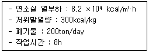
- 76
- 86
- 92
- 102
(정답률: 56%)
52. 폐기물의 물리화학적 분석 결과가 아래와 같을 때, 이 폐기물의 저위발열량(kcal/kg)은? (단, Dulong식 적용)(단위:wt%)
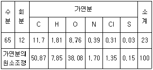
- 약 700
- 약 950
- 약 1,200
- 약 1,450
(정답률: 46%)
53. 폐기물 소각공정에서 발생하는 소각재 중 비산재(Fly Ash)의 안정화 처리기술과 가장 거리가 먼 것은?
- 산·용매추출
- 이온고정화
- 약제처리
- 용융고화
(정답률: 39%)
54. 소각공정과 비교하였을 때, 열분해공정이 갖는 단점이라 볼 수 없는 것은?
- 반응이 활발치 못하다.
- 환원성 분위기로 Cr+3가 Cr+6로 전환되지 않는다.
- 흡열반응이므로 외부에서 열을 공급시켜야 한다.
- 반응생성물을 연료로서 이용하기 위해서는 별도의 정제장치가 필요하다.
(정답률: 56%)
55. Thermal NOx에 대한 설명 중 틀린 것은?
- 연소를 위하여 주입되는 공기에 포함된 질소와 산소의 반응에 의해 형성된다.
- Fuel NOx와 함께 연소 시 발생하는 대표적인 질소산화물의 발생원이다.
- 연소 전 폐기물로부터 유기질소원을 제거하는 발생원 분리가 효과적인 통제방법이다.
- 연소통제와 배출가스 처리에 의해 통제할 수 있다.
(정답률: 57%)
56. 황 성분이 0.8%인 폐기물을 20ton/h 성능의 소각로로 연소한다. 배출되는 배기가스 중 SO2를 CaCO3로 완전히 탈황하려 할 때, 하루에 필요한 CaCO3의 양(ton/day)은? (단, 폐기물 중의 S는 모두 SO2로 전환되며 소각로의 1일 가동시간은 16시간, Ca 원자량은 40이다.)
- 1.0
- 2.0
- 4.0
- 8.0
(정답률: 38%)
57. 소각로 공사 및 운전과정에서 발생하는 악취, 소음, 배출가스 등의 발생원인별 개선방안으로 거리가 먼 것은?
- 쓰레기 반입장의 악취 : Air Curtain설비를 설치 후 가동상태 및 효과점검 등으로 외부확산을 근본적으로 방지
- 쓰레기 저장조 및 반입장의 악취 : 흡착탈취 및 미생물 분해, 탈취제 살포 등으로 악취 원인물질 제거
- 쓰레기 수거차량의 침출수 : 수거차량의 정기세차 및 소내 차량운행 속도를 증가하여 쓰레기 침출수를 외부누출 방지
- 소음 차단용 수립대 조성 : 소음원의 공학적 분석에 의한 소음발생 저지
(정답률: 67%)
58. 초기 다단로 소각로(multiple hearth)의 설계 시 목적 소각물은?
- 하수 슬러지
- 타르
- 입자상 물질
- 폐유
(정답률: 58%)
59. 화격자에 대한 설명 중 틀린 것은?
- 로 내의 폐기물 이동을 원활하게 해준다.
- 화격자의 폐기물 이동방향은 주로 하단부에서 상단부 방향으로 이동시킨다.
- 화격자는 폐기물을 잘 연소하도록 교반시키는 역할을 한다.
- 화격자는 아래에서 연소에 필요한 공기가 공급되도록 설계하기도 한다.
(정답률: 59%)
60. 소각로에서 하루 10시간 조업에 10,000kg의 폐기물을 소각 처리한다. 소각로 내의 열부하는 30,000kcal/m3·hr이고 로의 체적은 15m3일 때 폐기물의 발열량(kcal/kg)은?
- 150
- 300
- 450
- 600
(정답률: 57%)
4과목: 폐기물 공정시험기준(방법)
61. 다음 중 1μg/L와 동일한 농도는? (단, 액상의 비중 = 1)
- 1 pph
- 1 ppt
- 1 ppm
- 1 ppb
(정답률: 66%)
62. 유기물 함량이 비교적 높지 않고 금속의 수산화물, 산화물, 인산염 및 황화물을 함유하고 있는 시료에 적용되는 전처리 방법은?
- 질산 - 염산 분해법
- 질산 - 황산 분해법
- 질산 - 과염소산 분해법
- 질산 - 불화수소산 분해법
(정답률: 59%)
63. 정도 보증/정도 관리에 적용하는 기기검출한계에 관한 내용으로 ( )에 옳은 것은?
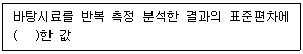
- 2배
- 3배
- 5배
- 10배
(정답률: 53%)
64. 자외선/가시선 분광법으로 구리를 측정할 때 알칼리성에서 다이에틸다이티오카르바민산 나트륨과 반응하여 생성되는 킬레이트 화합물의 색으로 옳은 것은?
- 적자색
- 청색
- 황갈색
- 적색
(정답률: 56%)
65. 환경측정의 정도보증/정도관리(QA/AC)에서 검정곡선방법으로 옳지 않은 것은?
- 절대검정곡선법
- 표준물질첨가법
- 상대검정곡선법
- 외부표준법
(정답률: 64%)
66. 온도에 관한 기준으로 옳지 않은 것은?
- 찬 곳은 따로 규정이 없는 한 0 ~ 15℃의 곳을 뜻한다.
- 각각의 시험은 따로 규정이 없는 한 실온에서 조작한다.
- 온수는 60 ~ 70℃로 한다.
- 냉수는 15℃ 이하로 한다.
(정답률: 66%)
67. 환원기화법(원자흡수분광광도법)으로 수은을 측정할 때 시료 중에 염화물이 존재할 경우에 대한 설명으로 옳지 않은 것은?
- 시료 중의 염소는 산화조작 시 유리염소를 발생시켜 253.7nm에서 흡광도를 나타낸다.
- 시료 중의 염소는 과망간산칼륨으로 분해 후 헥산으로 추출 제거한다.
- 유리염소는 과량의 염산하이드록실 아민 용액으로 환원시킨다.
- 용액 중에 잔류하는 염소는 질소가스를 통기시켜 축출한다.
(정답률: 36%)
68. 수은을 원자흡수분광광도법으로 정량하고자 할 때 정량한계(mg/L)는?
- 0.00⑤
- 0.002
- 0.⑤
- 0.5
(정답률: 49%)
69. 자외선/가시선 분광법에 의한 납의 측정시료에 비스무스(Bi)가 공존하면 시안화칼륨 용액으로 수회 씻어도 무색이 되지 않는다. 이 때 납과 비스무스를 분리하기 위해 추출된 사염화탄소층에 가해주는 시약으로 적절한 것은?
- 프탈산수소칼륨 완충액
- 구리아민동 혼합액
- 수산화나트륨 용액
- 염산히드록실아민 용액
(정답률: 43%)
70. 시료 채취에 관한 내용으로 ( )에 옳은 것은?
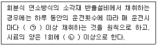
- ㉠ 2회, ㉡ 100g
- ㉠ 4회, ㉡ 100g
- ㉠ 2회, ㉡ 500g
- ㉠ 4회, ㉡ 500g
(정답률: 61%)
71. 함수율 85%인 시료인 경우, 용출시험결과에 시료 중의 수분함량 보정을 위하여 곱하여야 하는 값은?
- 0.5
- 1.0
- 1.5
- 2.0
(정답률: 50%)
72. 청석면의 형태와 색상으로 옳지 않는 것은? (단, 편광현미경법 기준)
- 꼬인 물결 모양의 섬유
- 다발 끝은 분산된 모양
- 긴 섬유는 만곡
- 특징적인 청색과 다색성
(정답률: 59%)
73. 세균배양 검사법에 의한 감염성 미생물 분석 시 시료의 채취 및 보존방법에 관한 내용으로 ( )에 적절한 것은?
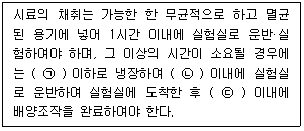
- ㉠ 4℃, ㉡ 6시간, ㉢ 2시간
- ㉠ 4℃, ㉡ 2시간, ㉢ 6시간
- ㉠ 10℃, ㉡ 6시간, ㉢ 2시간
- ㉠ 10℃, ㉡ 2시간, ㉢ 6시간
(정답률: 41%)
74. 자외선/가기선 분광법으로 크롬을 측정할 때 시료 중 총 크롬을 6가크롬으로 산화시키는 데 사용되는 시약은?
- 과망간산칼륨
- 이염화주석
- 시안화칼륨
- 디티오황산나트륨
(정답률: 58%)
75. 다음 시약 제조 방법 중 틀린 것은?
- 1M-NaOH 용액은 NaOH 42g을 정제수 950mL를 넣어 녹이고 새로 만든 수산화바륨 용액(포화)을 침전이 생기지 않을 때까지 한방울씩 떨어뜨려 잘 섞고 마개를 하여 24시간 방치한 다음 여과하여 사용한다.
- 1M-HCl 용액은 염산 120mL에 정제수를 넣어 1,000mL로 한다.
- 20 W/V%-KI(비소시험용) 용액은 KI 20g 을 정제수에 녹여 100mL로 하며 사용할 때 조제한다.
- 1M-H2SO4 용액은 황산 60mL를 정제수 1L 중에 섞으면서 천천히 넣어 식힌다.
(정답률: 47%)
76. 원자흡수분광광도계에 대한 설명으로 틀린 것은?
- 광원부, 시료원자화부, 파장선택부 및 측광부로 구성되어 있다.
- 일반적으로 가연성 기체로 아세틸렌을, 조연성 기체로 공기를 사용한다.
- 단광속형과 복광속형으로 구분된다.
- 광원으로 넓은 선폭과 낮은 휘도를 낮는 스펙트럼을 방사하는 납 음극램프를 사용한다.
(정답률: 56%)
77. 폐기물 시료에 대해 강열감량과 유기물함량을 조사하기 위해 다음과 같은 실험을 하였다. 아래와 같은 결과를 이용한 강열감량(%)은?
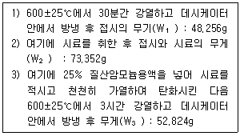
- 약 74%
- 약 76%
- 약 82%
- 약 89%
(정답률: 59%)
78. 기체크로마토그래피를 적용한 유기인 분석에 관한 내용으로 틀린 것은?
- 유기인 화합물 중 이피엔, 파라티온, 메틸디메톤, 다이아지논 및 펜토에이트의 측정에 이용된다.
- 유기인의 정량분석에 사용되는 검출기는 질소인검출기 또는 불꽃광도 검출기이다.
- 정량한계는 사용하는 장치의 측정 조건에 따라 다르나 각 성분 당 0.00⑤mg/L이다.
- 유기인을 정량할 때 주로 사용하는 정제용 칼럼은 활성 알루미나 칼럼이다.
(정답률: 56%)
79. 밀도가 0.3ton/m3인 쓰레기 1,200m3가 발생되어 있다면 폐기물의 성상분석을 위한 최소 시료수(개)는?
- 20
- 30
- 36
- 50
(정답률: 46%)
80. 자외선/가시선 분광광도계에서 사용하는 흡수셀의 준비 사항으로 가장 거리가 먼 것은?
- 흡수셀은 미리 깨끗하게 씻은 것을 사용한다.
- 흡수셀의 길이(L)를 따로 지정하지 않았을 때는 10mm셀을 사용한다.
- 시료셀에는 실험용액을, 대조셀에는 따로 규정이 없는 한 정제수를 넣는다.
- 시료용액의 흡수파장이 약 370nm이하일 때는 경질유리 흡수셀을 사용한다.
(정답률: 64%)
5과목: 폐기물 관계 법규
81. 폐기물 처리시설의 중간처분시설 중 화학적 처분시설에 해당되는 것은?
- 정제 시설
- 연료화 시설
- 응집·침전 시설
- 소멸화 시설
(정답률: 62%)
82. 환경부령으로 정하는 폐기물처리시설의 설치를 마친 자는 환경부령으로 정하는 검사기관으로부터 검사를 받아야 한다. 검사를 받으려는 자가 검사를 받기 위해 검사기관에 제출하는 검사신청서에 첨부하여야 하는 서류가 아닌 것은? (단, 음식물류 폐기물 처리시설의 경우)
- 설계도면
- 폐기물 성질, 상태, 양, 조성비 내용
- 재활용제품의 사용 또는 공급계획서(재활용의 경우만 제출한다.)
- 운전 및 유지관리계획서(물질수지도를 포함한다.)
(정답률: 45%)
83. 폐기물처리업의 변경허가를 받아야 하는 중요사항에 관한 내용으로 틀린 것은? (단, 폐기물 수집·운반업 기준)
- 운반차량(임시 차량 제외)의 증차
- 수집·운반 대상 폐기물의 변경
- 영업구역의 변경
- 수집·운반 시설 소재지 변경
(정답률: 50%)
84. 폐기물의 수집·운반·보관·처리에 관한 구체적 기준 및 방법에 관한 설명으로 옳지 않은 것은?
- 사업장 일반 폐기물 배출자는 그의 사업장에서 발생하는 폐기물을 보관이 시작되는 날부터 15일을 초과하여 보관하여서는 아니 된다.
- 지정폐기물(의료 폐기물 제외) 수집·운반 차량의 차체는 노란색으로 색칠하여야 한다.
- 음식물류 폐기물 처리 시 가열에 의한 건조에 의하여 부산물의 수분함량을 25% 미만으로 감량하여야 한다.
- 폐합성고분자화합물은 소각하여야 하지만, 소각이 곤란한 경우에는 최대 지름 15센티미터 이하의 크기로 파쇄·절단 또는 용융한 후 관리형 매립시설에 매립할 수 있다.
(정답률: 40%)
85. 폐기물의 광역관리를 위해 광역 폐기물 처리시설의 설치·운영을 위탁할 수 있는 자에 해당되지 않는 것은?
- 해당 광역 폐기물처리시설을 발주한 지자체
- 한국환경공단
- 수도권매립지관리공사
- 폐기물의 광역처리를 위해 설립된 지방자치단체조합
(정답률: 47%)
86. 폐기물처리시설의 사용종료 또는 폐쇄신고를 한 경우에 사후관리 기간의 기준은 사용종료 또는 폐쇄 신고를 한 날부터 몇 년 이내인가?
- 10년
- 20년
- 30년
- 50년
(정답률: 58%)
87. 폐기물 처리업에 종사하는 기술요원, 폐기물 처리시설의 기술관리인, 그 밖에 대통령령으로 정하는 폐기물 처리담당자는 환경부령으로 정하는 교육기관이 실시하는 교육을 받아야 함에도 불구하고 이를 위반하여 교육을 받지 아니한 자에 대한 과태료 처분 기준은?
- 100만원 이하의 과태료 부과
- 200만원 이하의 과태료 부과
- 300만원 이하의 과태료 부과
- 500만원 이하의 과태료 부과
(정답률: 56%)
88. 주변 지역 영향조사 대상 폐기물 처리시설 기준으로 옳은 것은? (단, 동일 사업장에 1개의 소각시설이 있는 경우)
- 1일 처리능력이 5톤 이상인 사업장 폐기물 소각 시설
- 1일 처리 능력이 10톤 이상인 사업장 폐기물 소각 시설
- 1일 처리 능력이 30톤 이상인 사업장 폐기물 소각 시설
- 1일 처리 능력이 50톤 이상인 사업장 폐기물 소각 시설
(정답률: 42%)
89. 환경정책기본법에 따른 용어의 정의로 옳지 않은 것은?
- “환경용량”이란 일정한 지역에서 환경 오염 또는 환경 훼손에 대하여 환경의 스스로 수용, 정화 및 복원하여 환경의 질을 유지할 수 있는 한계를 말한다.
- “생활환경”이란 지상의 모든 생물과 이들을 둘러싸고 있는 비생물적인 것을 포함한 자연의 상태를 말한다.
- “환경훼손”이란 야생동식물의 남획 및 그 서식지의 파괴, 생태계 질서의 교란, 자연경관의 훼손, 표토의 유실 등으로 자연환경의 본래적 기능에 중대한 손상을 주는 상태를 말한다.
- “환경보전”이란 환경 오염 및 환경 훼손으로부터 환경을 보호하고 오염되거나 훼손된 환경을 개선함과 동시에 쾌적한 환경 상태를 유지·조성하기 위한 행위를 말한다.
(정답률: 59%)
90. 환경부장관이나 시·도지사가 폐기물 처리업자에게 영업의 정지를 명령하고자 할 때 천재지변이나 그 밖의 부득이한 사유로 해당 영업을 계속하도록 할 필요가 있다고 인정되는 경우 영업정지에 갈음하여 부과할 수 있는 과징금의 범위 기준으로 옳은 것은?
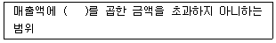
- 100분의 3
- 100분의 5
- 100분의 7
- 100분의 9
(정답률: 56%)
91. 폐기물처리시설의 사후관리업무를 대행할 수 있는 자로 옳은 것은? (단, 그 밖에 환경부장관이 사후관리 대행할 능력이 있다고 인정하고 고시하는 자는 고려하지 않음)
- 폐기물 관리학회
- 환경보전협회
- 한국환경공단
- 폐기물처리협의회
(정답률: 62%)
92. 폐기물처리시설의 유지, 관리를 위해 기술 관리인을 두어야 하는 폐기물 처리시설의 기준으로 옳지 않은 것은? (단, 폐기물 처리업자가 운영하는 폐기물 처리시설은 제외한다.)
- 멸균, 분쇄시설로서 시간당 처리 능력이 100 킬로그램 이상인 시설
- 압축, 파쇄, 분쇄 또는 절단 시설로서 1일 처리 능력이 10톤 이상인 시설
- 사료화, 퇴비화 또는 연료화 시설로서 1일 처리 능력이 5톤 이상인 시설
- 의료 폐기물을 대상으로 하는 소각시설로서 시간당 처리 능력이 200킬로그램 이상인 시설
(정답률: 41%)
93. 폐기물관리법에서 용어의 정의로 옳지 않은 것은?
- 생활 폐기물 : 사업장 폐기물 외의 폐기물을 말한다.
- 사업장 폐기물 : 대기환경보전법, 물환경 보전법 또는 소음·진동 관리법에 따라 배출시설을 설치·운영하는 사업장이나 그 밖에 대통령령으로 정하는 사업장에서 발생하는 폐기물을 말한다.
- 폐기물 처리시설 : 폐기물의 중간 처분시설, 최종 처분시설 및 재활용 시설로서 대통령령으로 정하는 시설을 말한다.
- 처리 : 폐기물의 수거, 운반, 중화, 파쇄, 고형화 등의 중간 처분과 매립하거나 해역으로 배출하는 등의 활동을 말한다.
(정답률: 53%)
94. 폐기물처리 신고자에게 처리금지를 갈음하여 부과할 수 있는 최대 과징금은?
- 1천만원
- 2천만원
- 5천만원
- 1억원
(정답률: 41%)
95. 폐기물처리업의 업종이 아닌 것은?
- 폐기물 재생처리업
- 폐기물 종합처분업
- 폐기물 중간처분업
- 폐기물 수집·운반업
(정답률: 54%)
96. 사후관리이행보증금의 사전적립 대상이 되는 폐기물을 매립하는 시설의 규모 기준으로 옳은 것은?
- 면적 3천300m2 이상인 시설
- 면적 1만m2 이상인 시설
- 용적 3천 300m3 이상인 시설
- 용적 1만 m3 이상인 시설
(정답률: 60%)
97. 폐유기용제 중 할로겐족에 해당되는 물질이 아닌 것은?
- 디클로로에탄
- 트리클로로트리플루오로에탄
- 트리클로로프로펜
- 디클로로디플루오로메탄
(정답률: 50%)
98. 폐기물처리시설을 사용종료하거나 폐쇄하고자 하는 자는 사용종료, 폐쇄신고서에 폐기물처리시설 사후관리계획서(매립시설에 한함)를 첨부하여 제출하여야 하는 폐기물 매립시설 사후관리계획서에 포함되어야 할 사항으로 거리가 먼 것은?
- 지하수 수질조사계획
- 구조물 및 지반 등의 안정도 유지계획
- 빗물 배제계획
- 사후 환경영향 평가 계획
(정답률: 46%)
99. 폐기물관리법상의 의료 폐기물의 종류가 아닌 것은?
- 격리의료폐기물
- 일반의료폐기물
- 유사의료폐기물
- 위해의료폐기물
(정답률: 54%)
100. 폐기물관리법의 적용 범위에 해당하는 물질은?
- 대기환경보전법에 의한 대기오염방지시설에 유입되어 포집된 물질
- 용기에 들어 있지 아니한 기체상태의 물질
- 하수도법에 의한 하수
- 물환경보전법에 따른 수질 오염 방지시설에 유입되거나 공공 수역으로 배출되는 폐수
(정답률: 50%)
생슬러지의 비중 = (수분 비중 × 수분 비중의 비중) + (고형물 비중 × 고형물 비중의 비중)
여기서, 수분 비중의 비중은 1이므로 생략할 수 있다.
고형물 비중 = (무기성 고형물 비중 + 휘발성 고형물 비중) = 2.2 + 1.1 = 3.3
고형물 비중의 비중 = (무기성 고형물의 비중 + 휘발성 고형물의 비중) / 100 = (2.2 + 1.1) / 100 = 0.033
고형물 비중 = 총고형물 중 휘발성 고형물의 비중 / 휘발성 고형물의 비중 × 100 = 70 / 1.1 × 100 = 6363.6364
따라서, 생슬러지의 비중은 다음과 같다.
생슬러지의 비중 = (0.9 × 1) + (0.1 × 6363.6364) = 1.023
따라서, 정답은 "1.023"이다.